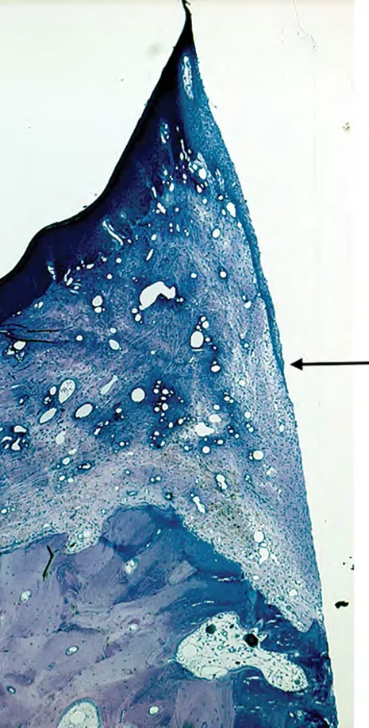
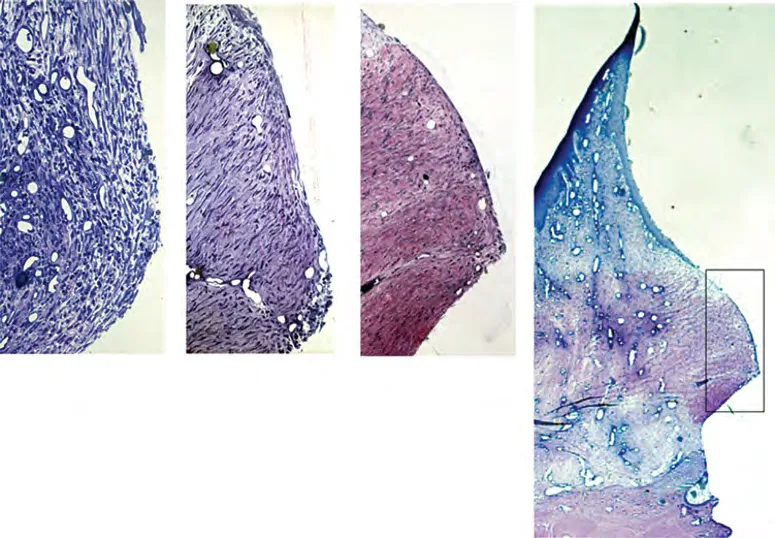

نسخه استخراجشده؛ ترجمه یا تأیید علمی انجام نشده است. وضعیت: captured
مخاط دور ایمپلنت اتفاقی شکل نمیگیرد؛ ابعاد نسبتاً ثابتی دارد که در مطالعات بارها تکرار شده است.
اتصال ترنسموکوزال در ایمپلنت از دو بخش ساخته شده:
• اپیتلیوم سدّی (barrier epithelium) با طول حدود ۲ میلیمتر
• ناحیهی بافت همبند با ارتفاع حدود ۱٫۳ تا ۱٫۸ میلیمتر
در بیوپسیهایی که پس از شش ماه دیگر گرفته شد، همین ابعاد در تمام ایمپلنتها تکرار شد. جمعبندی: اپیتلیوم پیوندگاهی و سدّی حدود ۲ میلیمتر طول دارند و ناحیهی بافت همبند فوقآلوئولار بین ۱ تا ۱٫۵ میلیمتر ارتفاع.
حالا همین را با دندان طبیعی مقایسه کن. در دندان، اپیتلیوم پیوندگاهی حدود ۲ میلیمتر و بافت همبند فوقکرستال حدود ۱ میلیمتر است؛ در ایمپلنت رابط ایمپلنت-بافتهمبند حدود ۱٫۵ میلیمتر است.
و اینجا یک یافتهی مهم است: مطالعات نشان دادند طول اتصال بافت همبند در دندان در محدودهی بسیار باریکی تغییر میکند (۱٫۰۶ تا ۱٫۰۸ میلیمتر)، در حالی که طول اپیتلیوم چسبنده بهشدت متغیر است: حدود ۱٫۴ میلیمتر در پریودنشیوم سالم، ۰٫۸ میلیمتر در تخریب متوسط و ۰٫۷ میلیمتر در تخریب پیشرفته.
یعنی کل ابعاد اتصال از حدود ۲٫۵ میلیمتر در حالت طبیعی به حدود ۱٫۸ میلیمتر در بیماری پیشرفته میرسد — و متغیرترین بخش، اپیتلیوم است، نه بافت همبند.
مشاهدهی کلیدی دیگر: اپیتلیوم سدّی در مخاط سالم همیشه در فاصلهی مشخصی — ۱ تا ۱٫۵ میلیمتر — از استخوان تمام میشود. این ثبات، همان چیزی است که پروب کردن را قابل تفسیر میکند.
ضخامت باکال: در مقایسه با دندان طبیعی، تاج روی ایمپلنت با مخاط باکال ضخیمتری احاطه میشود (۲٫۰ در برابر ۱٫۱ میلیمتر) و عمق پروب بیشتری دارد (۲٫۹ در برابر ۲٫۵ میلیمتر). ضمناً حاشیهی بافت نرم در ایمپلنت حدود ۱ میلیمتر اپیکالتر از حاشیهی لثهی دندان طرف مقابل قرار میگیرد.

ترمیم مخاط پریایمپلنت یک تقویم مشخص دارد، و دانستنش تعیین میکند کِی میتوانی به بافت دست بزنی:
• اولین نشانههای تکثیر اپیتلیال: پس از ۱ تا ۲ هفته.
• سازمانیافتن الیاف کلاژن مخاط: ۴ تا ۶ هفته.
• اپیتلیوم سدّی بالغ: ۶ تا ۸ هفته.
• تکمیل تشکیل اپیتلیوم پیوندگاهی: ۸ هفته.
در همین بازه، تراکم سلولهای التهابی و ساختارهای عروقی در مخاط پریایمپلنت بهمرور کاهش مییابد. یعنی بافتی که در هفتهی دوم میبینی، همان بافتی نیست که در هفتهی هشتم خواهی داشت.
پروب کردن — چه چیزی را واقعاً اندازه میگیری؟
در مطالعات حیوانی، در بافت سالم نوک پروب در دندان و ایمپلنت در فاصلهی مشابهی از استخوان میایستاد — چه با پروب الکترونیک (قطر نوک ۰٫۵ میلیمتر، نیروی ۰٫۳ تا ۰٫۴ نیوتن) و چه با نیروی سبک ۰٫۲ نیوتن؛ در مطالعهی اخیر، فاصلهی نوک پروب تا کرست استخوان حدود ۱ میلیمتر بود. با نیروی ۰٫۲۵ تا ۰٫۴۵ نیوتن، این فاصله بین ۰٫۷۵ تا ۱٫۴ میلیمتر گزارش شده است.
و تفاوت سلامت و بیماری در همین عدد پیداست: عمق پروب «هیستولوژیک» در محلهای سالم و موکوزیت پریایمپلنت حدود ۱٫۸ میلیمتر بود، در حالی که در پریایمپلنتیت به حدود ۳٫۸ میلیمتر میرسید. در محل سالم پروب در قاعدهی اپیتلیوم سدّی متوقف میشود؛ در پریایمپلنتیت بهطور میانگین ۰٫۵ میلیمتر از قاعدهی اپیتلیوم زخمی پاکت فراتر میرود.
و «bone sounding»: فاصلهی حاشیهی بافت نرم تا کرست استخوان را میدهد و برآوردی حدود ۱ میلیمتر بیشتر از اندازهگیری معمول عمق پاکت است.
فنوتیپ — دو تصویر متفاوت:
فنوتیپ تخت (flat): لثهی مارجینال باکال نسبتاً ضخیم، پاپیلاها اغلب کوتاه، دیوارهی کورتیکال باکال ضخیم، و فاصلهی عمودی میان کرست بیندندانی و استخوان باکال کوتاه (حدود ۲ میلیمتر).
فنوتیپ اسکالوپ برجسته: لثهی مارجینال باکال ظریف که لبهاش گاه همسطح یا اپیکال به CEJ است، پاپیلاها بلند و باریک، دیوارهی باکال اغلب نازک، و فاصلهی عمودی بلند (بیش از ۴ میلیمتر).
و این تفاوت به عدد میرسد: ارتفاع لثه در سطوح باکال-تقریبی در فنوتیپ تخت بهطور میانگین ۴٫۵ میلیمتر بود، در برابر ۳٫۸ میلیمتر در فنوتیپ اسکالوپ — تفاوتی معنادار. ابعاد مخاط پریایمپلنت در فنوتیپ ضخیم هم بهطور معنادار بزرگتر بود، و بُعد بافت نرم پریایمپلنت بیش از ۴ میلیمتر معمولاً با فنوتیپ پریودنتال ضخیم همراه بود.
